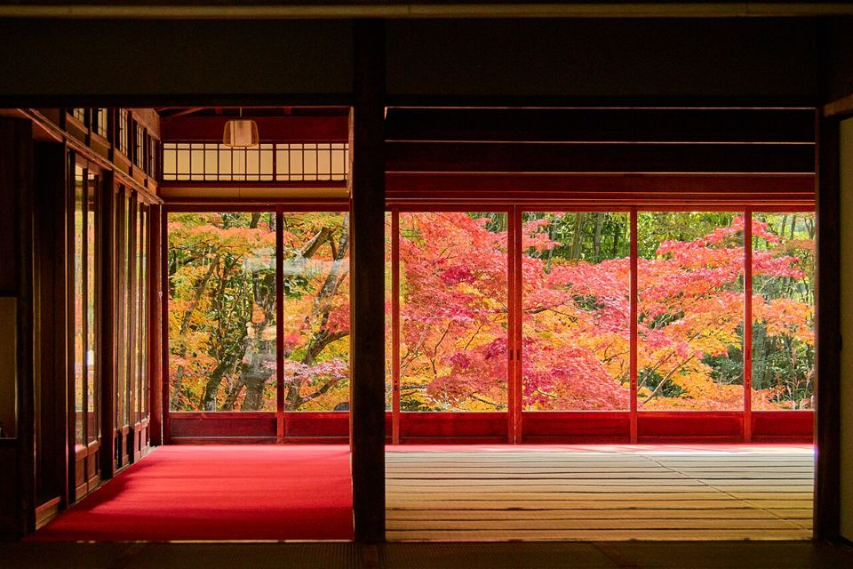
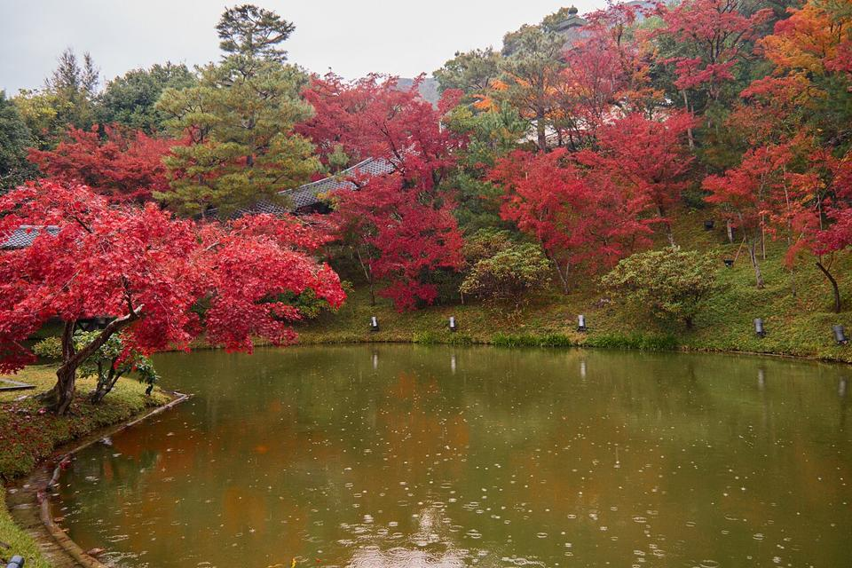

X1
捲動淡入
0.4 秒- 永觀堂的楓紅早晨11 月 18 日・散步

南禪寺方丈的窗景11 月 20 日・寺院
高台寺池畔小記11 月 22 日・庭園
適合：文章列表、作品集、首頁區塊
點每張卡片的「重播」看效果，挑喜歡的代號告訴我。
你的裝置開啟了「減少動態效果」，這裡只會顯示每個特效的最終畫面。
區塊第一次出現在畫面上時
X1–X5

適合：文章列表、作品集、首頁區塊
適合：首圖、旅遊景點、餐廳介紹
三座寺院、兩天行程，跟著楓紅散步。
適合：首頁大標、活動頁、簡報式網頁
適合：攝影集首頁、旅遊景點、餐廳環境
從八坂神社往南走十分鐘就到高台寺。秋天池畔倒映著整片紅葉，早上九點前遊客最少，適合拍照。
臥龍池旁的步道不長，慢慢走大約二十分鐘。建議從開山堂往下看，角度最好。
夜間點燈從十月底開始，門票含茶室參觀，可以順便休息一下。
適合：長文章首圖、旅遊專題、品牌故事
滑過、點擊或作答時給的回應
X6–X12適合：作品集、文章卡片、商品列表
適合：部落格、新聞內文、頁尾連結
按下時微微縮小，放開後回彈。
適合：所有按鈕、測驗選項、表單送出
京都賞楓、台南小吃，依日期排列。
2026 秋・京都，共 86 張照片。
住在台北，週末喜歡走路拍照，偶爾寫點筆記。
適合：上方分頁版面、儀表板、會員中心
清水寺位於京都的哪一區？
答對了
適合：測驗題庫、課程練習、問卷
週二到週日 11:00–20:00，週一公休。
戶外座位可以，室內請放在寵物推車裡。
線上訂位或來電，6 人以上請提前三天。
適合：常見問題、課程章節、餐廳資訊
適合：儲存、複製連結、加入收藏
數字、圖表和等待中的畫面
X13–X16適合：儀表板、公司成果、活動統計
適合：儀表板、報表、測驗成績
適合：文章列表、儀表板、會員資料
水路閣是明治時期蓋的紅磚水道橋，至今仍在輸水。從南禪寺三門往右走，穿過松林就會看到。
拱門下的光線早上最柔和，九點前遊客不多，可以拍到整排拱門的透視。
沿著水道往上走，可以接到琵琶湖疏水的步道，一路通到蹴上傾斜鐵道。
春天是櫻花、秋天是楓葉，冬天人少，反而最適合慢慢看建築細節。
回程可以在附近的湯豆腐老店午餐，記得先排隊抽號碼牌。
適合：長文章、教學講義、課程內容